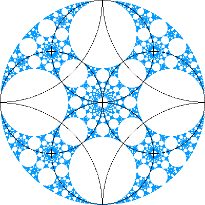

For Inversion in circles the amount of shrinking depends on the distance from circle.
This can give rise to fractals with a nonlinear sel-similarity.
This nonlinearuty is illustrated in the picture on the left.
This picture shows the fractal generated by five circles: the middle circle and the four quarter-circles, each of which is part of a whole circle, mostly not shown.
The colors indicate correspondences across the upper left circle.
For example, the green section in the middle circle inverts to the green part in the upper left circle.
Details are provided later, but this should indicate the nonlinear relation among the pieces.
|  |
The right picture is produced by eight circles: the four whole and four quarter-cirlces shown.
Unlike the picture on the left, here the circles overlap.
We shall see the details, and even the existence of, the fractal structure depend delicately on the angle of intersection of the circles.
Return to More Examples.